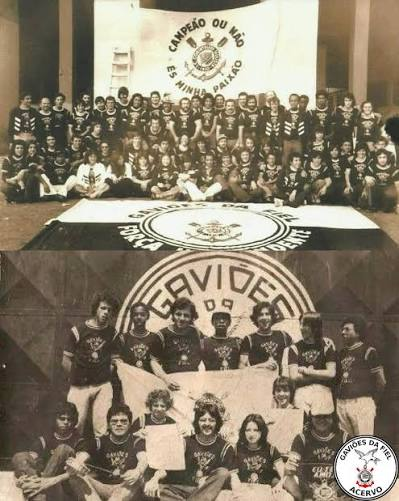
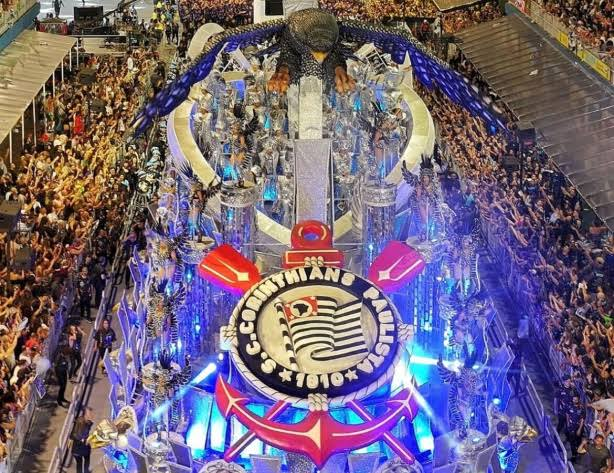
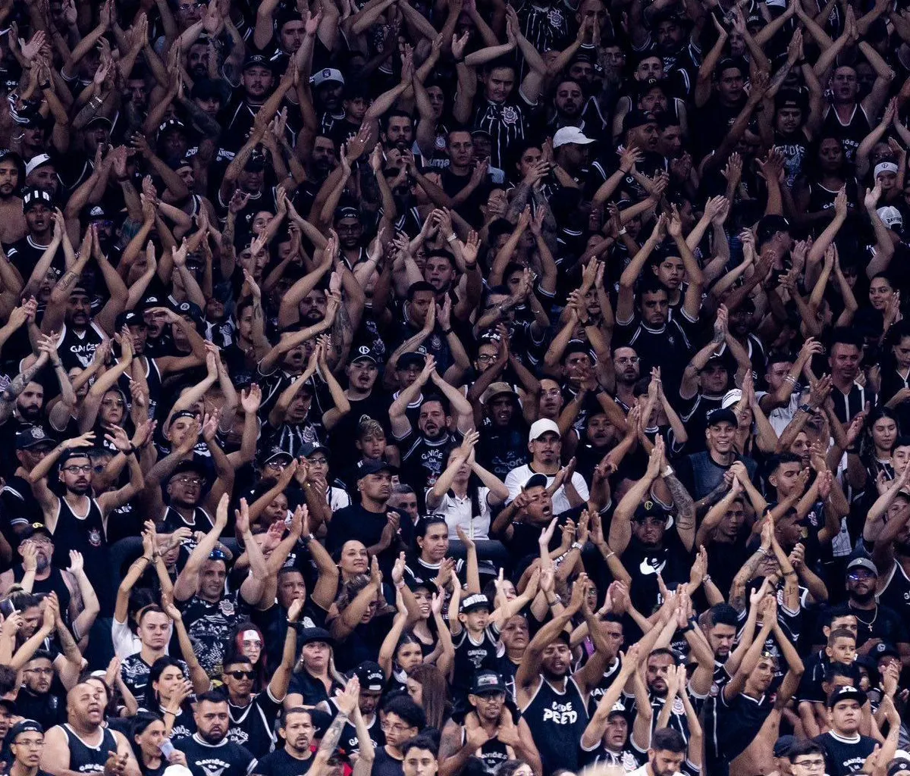

ALMA DA FIEL / GAVIÕES DA FIEL
Muito além das arquibancadas
Uma história de paixão, identidade e participação na trajetória do Corinthians..
Uma história que começou em 1969
Com o intuito de apoiar o time, mas também participar ativamente da vida política e administrativa do Corinthians, fiscalizando a diretoria e defendendo os interesses dos torcedores.

Uma voz que ecoa nas arquibancadas
Desde 1969, essa voz rompe o silêncio dos estádios para ditar o ritmo da paixão alvinegra, transformando cimento frio em um caldeirão de sentimento puro. É um canto que não cessa diante da derrota e que transborda na vitória, carregando o lema de Lealdade, Humildade e Procedimento.
Além do futebol
Os Gaviões estenderam sua paixão para o Carnaval paulistano, transformando-se em uma das escolas de samba mais tradicionais de São Paulo. Mais do que uma torcida, a agremiação historicamente engajou-se em causas civis importantes — como o movimento das Diretas Já e a Anistia —, provando que o verdadeiro espírito da Fiel reside na união, na cultura popular e na incansável voz de sua comunidade.

O significado de ser Fiel
Ser fiel é carregar no peito o orgulho de uma comunidade vibrante, onde a devoção cega pelo time se mistura à solidariedade mútua entre os membros. É entender que os Gaviões não são apenas uma torcida ou uma escola de samba, mas uma extensão da própria família, onde o amor pelo manto alvinegro é o elo inquebrável que une gerações.
